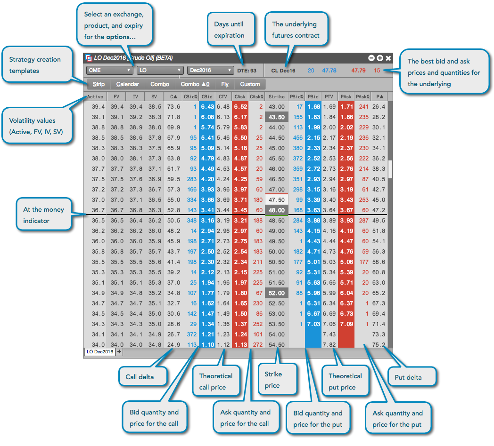

Use the Options Chain widget to quickly display a listing of the options for a given maturity along with their bids and offers. For the most liquid symbols on some exchanges, you can also view the volatility of call and put options available for the underlying futures contract and submit an order to buy or sell the option, as well as submit an order for the underlying. When opened in your workspace, the Options Chain displays strike prices in the center column, and displays premium prices for calls and puts in the left and right columns, respectively.

The Options Chain widget displays the following data:
- Theoretical call and put option prices based on an options price model, as well as the best bid, ask, and quantity for each option.
- Volatility values for call and put options.
- Strike prices (shaded red) at volatility curve control points.
- The delta for each call and put option.
- At the money (black line), in the money, and out of the money calls and puts.
- The name of the underlying futures contract for the options maturity month.
- The best bid and ask price and quantity for the underlying futures contract.
You can open an Options Chain as follows:
- Click the Widgets on the workspace title bar and select the Options Chain widget.
- Search for a product or find an instrument in the Market Explorer and click Options Chain.
- Right-click a contract name in the Market Grid and select Open | Options Chain.